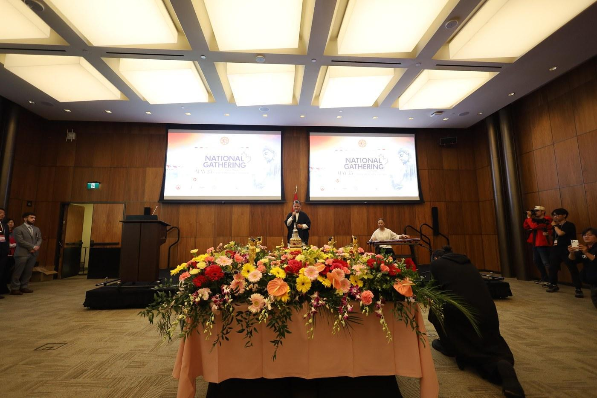
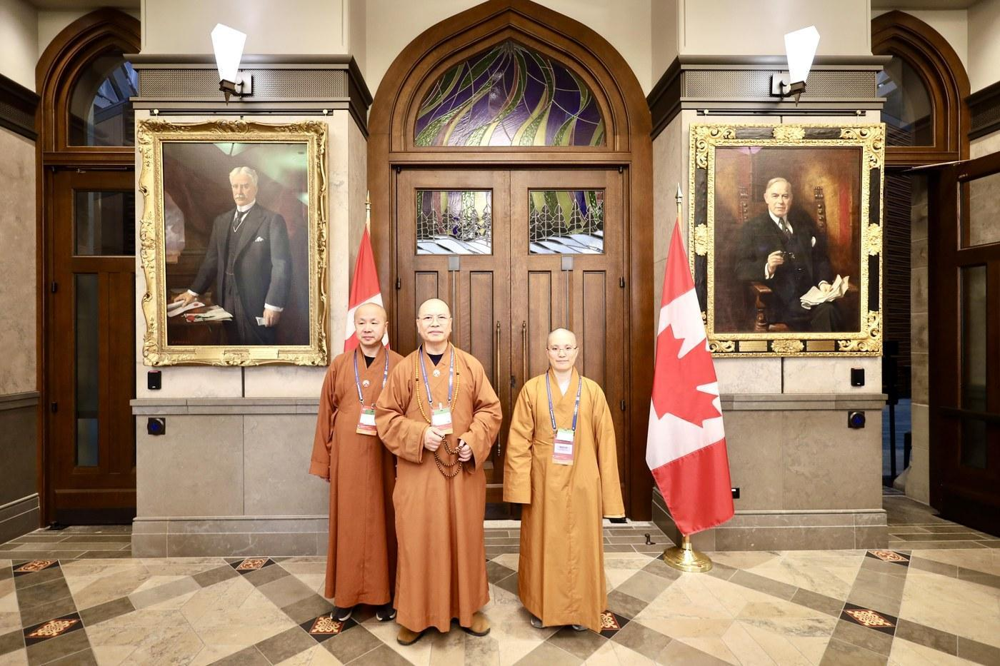
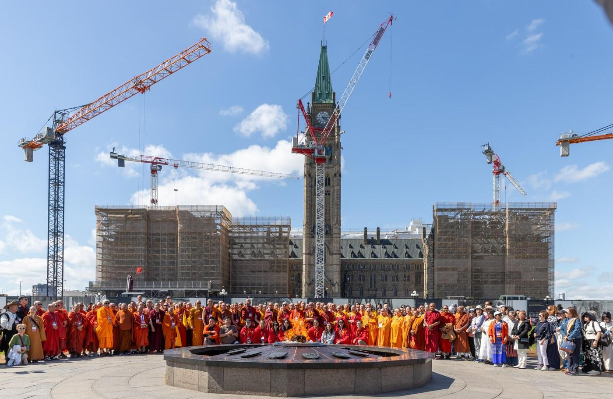
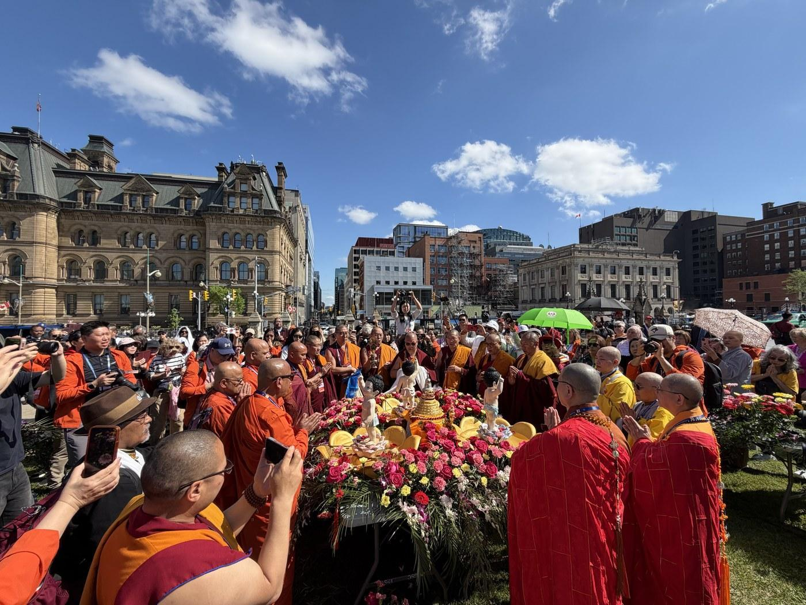
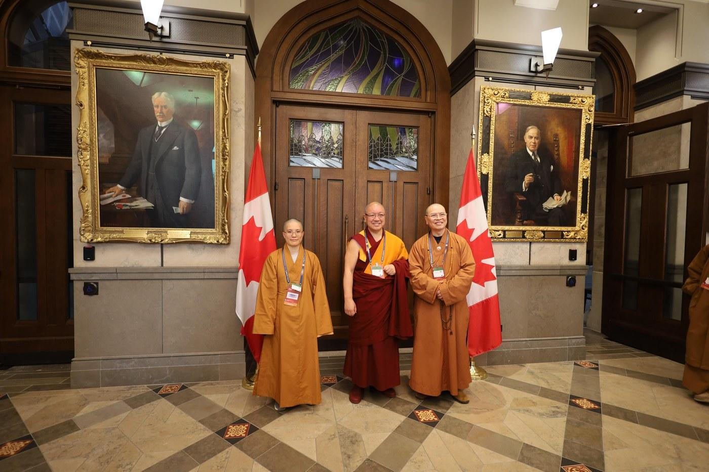
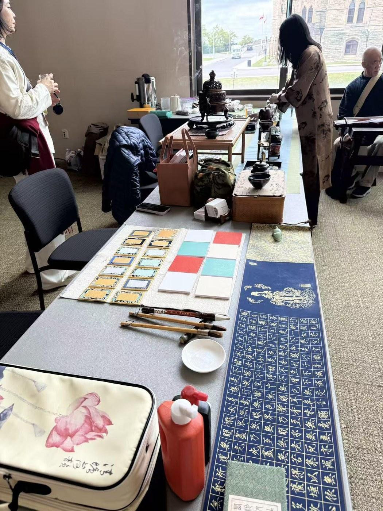
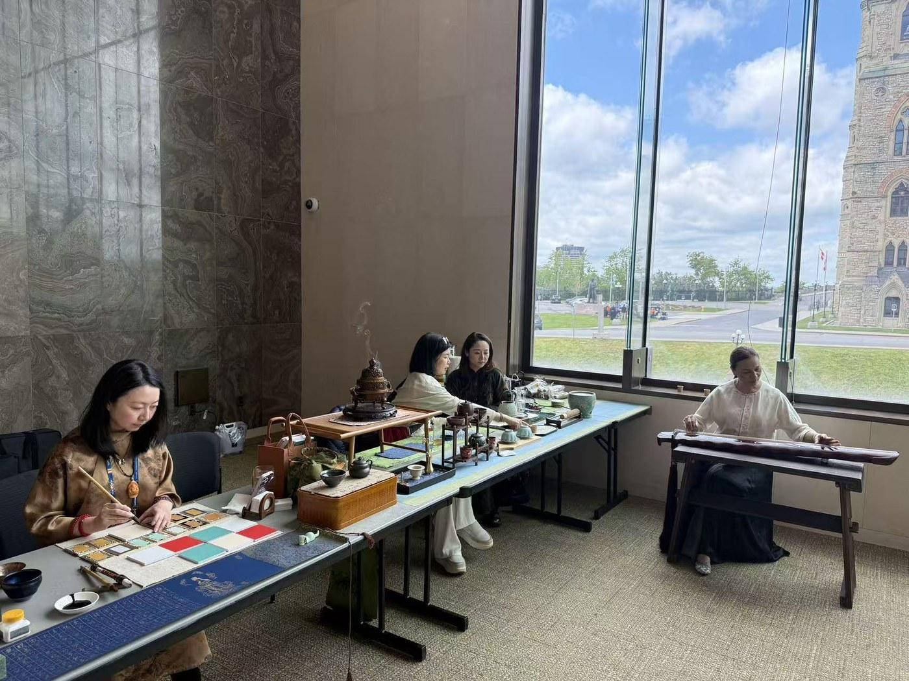
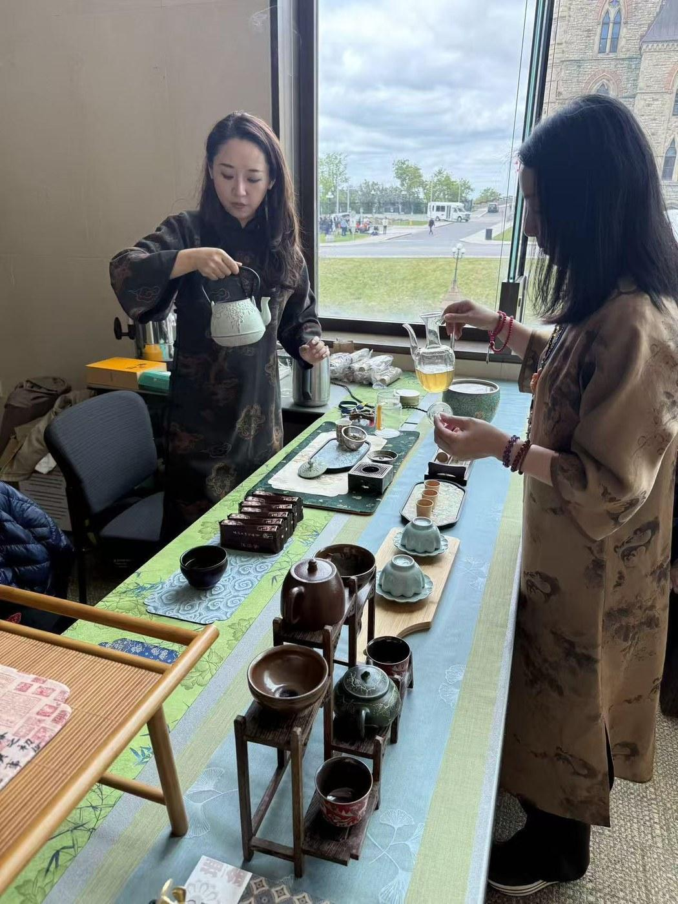
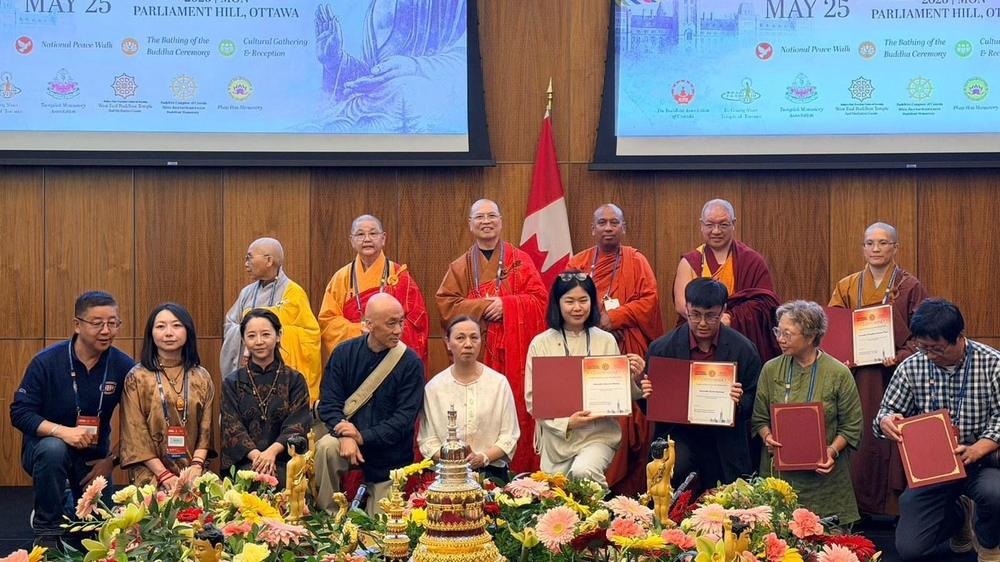

Before the Gathering: Planning Meetings
Before the gathering on Parliament Hill, planning meetings were held on 20 April and 15 May 2026.
Before the gathering, various venerables and esteemed masters met to talk over the event, including Venerable Dayi, Abbot of Cham Shan Temple and President of the Buddhist Association of Canada, and Tsengdok Rinpoche; both masters and their temples were among the six main organizers of the event.
Venerable Dayi spoke on the importance of being respectful to parents and having benevolence towards sentient beings, and Tsengdok Rinpoche spoke on the importance of Buddhist Heritage Month and on the three traditions — Theravada, Mahayana and Tibetan — working together in Canada.

On 25 May 2026, more than 1,000 participants and 150 monastics from across North America gathered on Parliament Hill in Ottawa for a historic assembly advocating for the official federal designation of May as Canadian Buddhist Heritage Month.
A broad coalition
The landmark gathering was organized by a broad coalition of Theravada, Mahayana, and Tibetan traditions, and marked the most significant public assembly to date supporting the movement. The initiative seeks formal cultural recognition from the federal government to honour the historic contributions of over 500,000 Buddhist Canadians. Organizers emphasized that the movement is rooted in a desire for cultural visibility and inclusion, rather than religious privilege.
The day’s events
The day's events began with monastics attending proceedings in Canada's House of Commons, followed by a joint press conference at West Block. Public activities in front of the Centennial Flame included the traditional Buddha bathing ceremony and a peace walk. There was also the first display of the Buddha's relics in front of Parliament.
Chan and Tea’s part
As an active participating NGO, Chan and Tea Culture International stood proudly alongside community leaders and practitioners to amplify this collective call for recognition. The gathering highlighted how deeply the core Buddhist values of mindfulness, compassion, and peace are woven into the fabric of Canadian civic culture. Nine members from Chan and Tea Culture International took part in the event as volunteers, led by Venerable Daojing, Vice-President of the association. Venerable Daojing attended representing both organisations — Chan and Tea Culture International and the International Chan Cultural Research Association — as Vice-President.
A growing movement
The movement is also finding resonance across the country, echoing grassroots efforts in six provinces, and is currently under legislative consideration. The association will continue to give its full support to this national movement, and extends its deepest gratitude to all the participants and volunteers who travelled to Ottawa to speak out for the community's shared vision.
More photographs









Chan and Tea Culture International is dedicated to promoting Chan — the Chan school of Chinese Buddhism — and Chinese tea culture. Through a cup of tea, the association hopes to bring stillness, compassion and harmony to all: a bowl of tea, quietly shared, can help the mind settle, open the heart, and bring people together in peace.
https://youtube.com/playlist?list=PLbrwahPXnRA9RZ_elQ7pEV1yWLBdJrsfN&si=EItZ9cFU4NGMNBkD